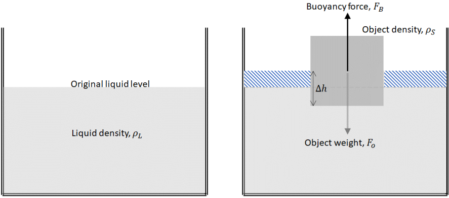
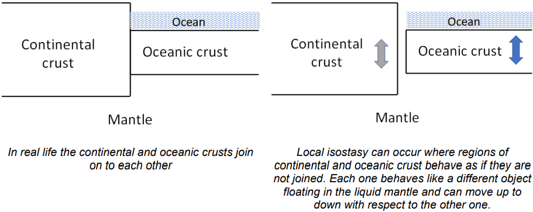
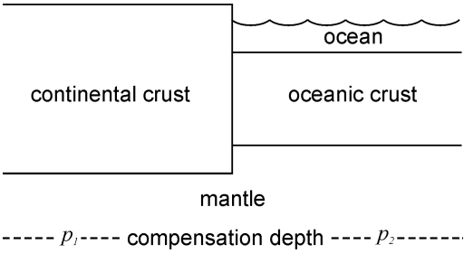
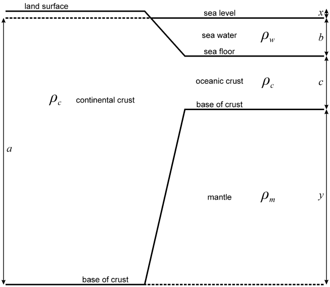
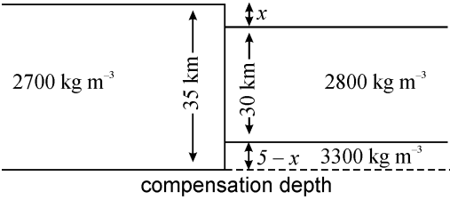
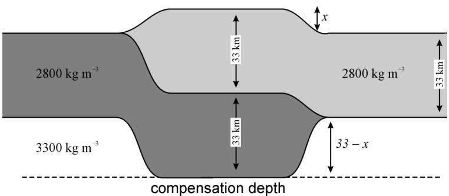
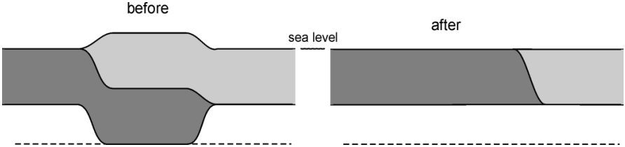
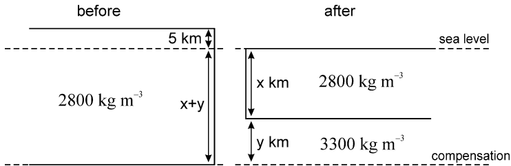

Isostasy
Contents
Isostasy#
Physical Processes Dynamic Earth and Planets Pure Geophysics
Isostasy is a simple but powerful idea. It explains large-scale topography on the Earth – mountains, basins, oceans, continents – and isostatic forces provide most of the mechanisms that drive global tectonics and ultimately most of geology.
Isostasy is based on the idea that the outer layer of the Earth is weak and has a lower density than the interior which behaves like a liquid. This outer layer is therefore floating on the denser interior. For the Earth, the lower density region is typically the crust, and the higher density region is typically the mantle although temperature and compositional changes within any region can also cause isostatic effects.
Buoyancy and Archimedes Principle#
Before we discuss isostasy in more detail it is helpful to discuss Archimedes principle and buoyancy.
According to Archimedes’ principle, if a lower density object is placed in a liquid with a higher density it will sink into that liquid until the weight of the liquid displaced by the object is equal to the weight of object (see below), in other words so that the weight of the object is equal to the weight of the water displaced and the buoyancy force (\(F_B\) in the diagram below) is equal to the object weight (\(F_o\)).

\(\qquad\)Figure 1: Illustration of Archimedes principle. An object of density \(\rho_S\) is placed in a liquid of density \(\rho_L\). It sinks into the liquid until a volume \(\Delta V\) of the object is below the liquid level. The liquid in this diagram is in a container so and the liquid consequently rises as shown by the shading.
Another way of saying this is that if the object has a volume \(V\) then its weight is \(\rho_S \times V \times g\) (where \(g\) is the acceleration due to gravity) and the weight of the displaced liquid is \(\rho_L \times \Delta V \times g\) where the volume of displaced liquid is \(\Delta V\).
If the floating object has a relatively low density, then its upper surface will be higher above the liquid level than if it has a relatively high density (when its upper surface will be lower). If the floating object has a constant density, then its upper surface will be raised if the object is relatively thick, and will be lowered if the object is relatively thin. If the density of the upper layer is too high, then it will no longer float, and it will founder and sink.
Isostatic balance#
The concepts of isostasy and isostatic balance are based on three ideas:
The deep interior of the Earth (below \(\sim 100\,km\)) has no long-term strength: it acts as a solid over short time scales (~ minutes), but as a fluid over longer time-scales (~ millennia)
Within a static fluid, the pressure at a horizontal surface is constant everywhere.
The outermost layers of the Earth are sufficiently weak that they can move vertically in response to isostatic forces.
Isostasy is simply the application of Archimedes principle to describing how the crust (the solid object in the last diagram) floats on the mantle (the liquid).
Local Isostasy#
If the relatively rigid outer region of the Earth (the lithosphere) is assumed to be composed of a number of blocks that can move independently in a vertical direction, then local isostatic equilibrium is possible. This is generally a good approximation when comparing regions that are weak or that are a few hundred kilometres or more in lateral extent.

Figure 2: The concept of local isostasy and reality.
If a region is in local isostatic equilibrium, then the pressure at some depth below it (the compensation depth) will be everywhere equal, and the weight of a column of unit area above the compensation depth will everywhere be equal. For example, a simple model of the continent and ocean will give:

Figure 3: Compensation depth.
Here, the pressure at the compensation depth is equal so that \(p_1 = p_2\). Above the compensation depth, the weight per unit area of the continental crust and mantle on the left hand side is equal to the weight per unit area of the ocean, oceanic crust and mantle on the right hand side. If this were not true, then one block would rise or sink relative to the other until it became true.
where the summation and the integration are from the surface down to the compensation depth. In practice the compensation depth is any depth that is sufficiently large that the Earth below this can be considered to have no strength and no lateral variation in density. In general, variations of \(g\) with depth are sufficiently small that gravity can be considered to be constant in isostatic calculations.
In this session, a function for aiding the isostatic calculation has been developed.
# import relevant modules
%matplotlib inline
import numpy as np
import matplotlib.pyplot as plt
import pandas as pd
from IPython.display import display
from math import log10, floor
# create our own functions
# function to round a value to a certain number of significant figures
def round_to_n_sf(value, no_of_significant_figures):
value_rounded = round(value, no_of_significant_figures-1-int(floor(log10(abs(value)))))
if value_rounded == int(value_rounded):
value_rounded = int(value_rounded)
return value_rounded
# function for extracting float from string
def extract_float_from_str(string):
float_str = ''
for c in string:
if c in '1234567890.':
float_str += c
if float_str != '':
return float(float_str)
else:
return 'no float'
# convert string to float - used internally in the isostasy equation solver
# float() can do this, but can't convert '+' to 1 and '-' to -1
# the input must be a string ready to convert using float() or '+' or '-'
def to_float(string):
if string == '+' or string == '-':
string += '1'
return float(string)
# isostasy equation solver
# inputs are 4 lists: 2 lists of densities and 2 lists of thicknesses ([density1], [thickness1], [density2], [thickness2])
# first two represent the LHS of the equation and and the remaining represent the RHS
# numeric values are float, variable is one-character substring (this solver can have only 1 variable) in a variable-containing string
# the equation should always be linear
def isostasy_equation_solver(density_list1, thickness_list1, density_list2, thickness_list2):
coefficient1 = 0 # coefficient of the variable from list 1
coefficient2 = 0 # coefficient of the variable from list 2
total_constant_value_1 = 0 # sum of all constant terms from list 1
total_constant_value_2 = 0 # sum of all constant terms from list 2
# loop through every term (density*thickness) on LHS
for i in range(len(density_list1)):
d = density_list1[i]
t = thickness_list1[i]
if (type(d) == float or type(d) == int) and (type(t) == float or type(t) == int):
total_constant_value_1 += d * t
else:
contain_variable = ''
numeric_value = 0
if type(d) == str:
contain_variable = d.replace(' ', '')
numeric_value = t
elif type(t) == str:
contain_variable = t.replace(' ', '')
numeric_value = d
for j in range(len(contain_variable)): # loop through every character to find variable from variable-containing string
if contain_variable[j].isalpha(): # if variable is found
if j == 0: # the variable is the first character in the string (coefficient is automatically 1)
coefficient1 += 1 * numeric_value
if len(contain_variable) > 1: # if the string doesn't only contain variable e.g. x+5
total_constant_value_1 += float(contain_variable[1:len(contain_variable)]) * numeric_value
else:
if not ('+' in contain_variable or '-' in contain_variable): # no +,- sign e.g. 2x
coefficient1 += float(contain_variable[:j]) * numeric_value
else:
# reverse loop from the position of variable to find +,- sign
# which indicates that the string doesn't only contain variable e.g. 5+x
# or the coefficient is negative e.g. -2x
for k in range(j, -1, -1):
if contain_variable[k] in '+-':
coefficient1 += to_float(contain_variable[k:j]) * numeric_value
total_constant_value_1 += float(contain_variable.replace(contain_variable[k:j+1], '')) * numeric_value
break
# loop through every term (density*thickness) on RHS
for i in range(len(density_list2)):
d = density_list2[i]
t = thickness_list2[i]
if (type(d) == float or type(d) == int) and (type(t) == float or type(t) == int):
total_constant_value_2 += d * t
else:
contain_variable = ''
numeric_value = 0
if type(d) == str:
contain_variable = d.replace(' ', '')
numeric_value = t
elif type(t) == str:
contain_variable = t.replace(' ', '')
numeric_value = d
for j in range(len(contain_variable)): # loop through every character to find variable from variable-containing string
if contain_variable[j].isalpha(): # if variable is found
if j == 0: # the variable is the first character in the string (coefficient is automatically 1)
coefficient2 += 1 * numeric_value
if len(contain_variable) > 1: # if the string doesn't only contain variable e.g. x+5
total_constant_value_2 += float(contain_variable[1:len(contain_variable)]) * numeric_value
else:
if not ('+' in contain_variable or '-' in contain_variable): # no +,- sign e.g. 2x
coefficient2 += float(contain_variable[:j]) * numeric_value
else:
# reverse loop from the position of variable to find +,- sign
# which indicates that the string doesn't only contain variable e.g. 5+x
# or the coefficient is negative e.g. -2x
for k in range(j, -1, -1):
if contain_variable[k] in '+-':
coefficient2 += to_float(contain_variable[k:j]) * numeric_value
total_constant_value_2 += float(contain_variable.replace(contain_variable[k:j+1], '')) * numeric_value
break
# rearrange the equation and return the value of the variable
return (total_constant_value_1 - total_constant_value_2)/(coefficient2 - coefficient1)
Question 1#
Figure 4 shows a simplified cross section through a passive continental margin. Assuming perfect isostasy and the numbers below, calculate the height (\(x\)) of the land surface above sea level in this figure.
Given that:
Density of sea water (\(\rho_w\)) = \(1000\,kg\,m^{-3}\)
Density of crust (\(\rho_c\)) = \(2800\,kg\,m^{-3}\)
Density of mantle (\(\rho_m\)) = \(3300\,kg\,m^{-3}\)
Depth of ocean (\(b\)) = \(5000\,m\)
Thickness of ocean crust (\(c\)) = \(7000\,m\)
Depth of the base of continental crust below sea level (\(a\)) = \(35000\,m\)

Figure 4: Simplified cross section through a passive continental margin.
Solution:
First, find the distance \(y\) by examining Figure 4.
Then, balance the mass of two columns, that extend to the same depth, each with unit cross sectional area, one on the continental side and the other on the oceanic side. That is, find the value of \(x\) such that:
# Question 1
# value of each parameter
a = 35000 # Depth of the base of continental crust below sea level (m)
b = 5000 # Depth of ocean (m)
c = 7000 # Thickness of ocean crust (m)
y = a - c - b # Thickness of mantle below the base of oceanic crust and above the compensation depth, acquired from the figure
d_w = 1000 # Density of sea water (kg m^-3)
d_c = 2800 # Density of crust (kg m^-3)
d_m = 3300 # Density of mantle (kg m^-3)
# find x using our isostasy equation solver
x = isostasy_equation_solver([d_c, d_c], [a, 'x'], [d_w, d_c, d_m], [b, c, y])
print(f"x = {round_to_n_sf(x, 2)} m, and y = {round_to_n_sf(y, 2)} m")
x = 890 m, and y = 23000 m
Question 2#
Two blocks of crust sit adjacent to each other in local isostatic equilibrium. One block is \(35\,km\) thick with a density of \(2700\,kg\,m^{−3}\); the other is \(30\,km\) thick with a density of \(2800\,kg\,m^{−3}\). The mantle density beneath both blocks is \(3300\,kg\,m^{−3}\). What is the difference in surface elevation between the two blocks?
Solution:
The first step in any problem like this is to draw a diagram, label any thicknesses and densities that are known, and use symbols for any that need to be found. Often there will be simple relationships between unknown thicknesses; include these on the diagram. In this problem, if the height of the top of the left-hand crustal block above the right is \(x\) km, then the offset of the base of the block will be \(35 − x − 30 = 5 − x\) as shown.

Figure 5: Simplified cross section through two blocks of crust sit adjacent to each other in local isostatic equilibrium.
By mass balance, we can use our solver to find \(x\).
# Question 2
# the equation should be (2700*35) = (2800*30) + (3300)(5-x)
# find x using our isostasy equation solver
x = isostasy_equation_solver([2700], [35], [2800, 3300], [30,'5-x'])
print(f"The surface elevation changes by x = {round_to_n_sf(x, 2)} km between the two blocks, \
and the base of the crust changes by 5 - x = {round_to_n_sf(5-x, 2)} km.")
The surface elevation changes by x = 1.8 km between the two blocks, and the base of the crust changes by 5 - x = 3.2 km.
Question 3#
The crust is \(33\,km\) thick with a density of \(2800\,kg\,m^{−3}\). A collision between two continents occurs in which this crust is thrust over an equivalent thickness of crust on another continent. How high is the resultant plateau assuming a mantle density of \(3300\,kg\,m^{−3}\) and that local isostasy pertains? This is approximately the situation today in Tibet.

# Question 3
# the equation should be (2800)(33+33) = (2800*33) + (3300)(33-x)
# find x using our isostasy equation solver
x = isostasy_equation_solver([2800], [33+33], [2800, 3300], [33,'33-x'])
print(f"The height of the plateau is x = {round_to_n_sf(x, 2)} km.")
The height of the plateau is x = 5 km.
Question 4#
A plateau stands in local isostatic equilibrium \(5\,km\) above sea level. If the crust beneath the plateau has a density of \(2800\,kg\,m^{−3}\) and the mantle has a density of \(3300\,kg\,m^{−3}\), what thickness of material must be eroded from the plateau to reduce its height to sea level assuming that isostatic equilibrium is maintained?
Solution:
\(33\,km\) of material were added to the thickness of the crust to produce a net uplift at the surface of only \(5\,km\). Clearly then, to remove 5 km of uplift, a thickness equivalent to that of the added material must be removed; that is we need to erode a total thickness of \(33\,km\).

Now to answer the question properly from scratch.

Note that we do not know the thickness of the blocks, so we introduce \(x\) and \(y\) as unknowns.
Now we have:
\(x\) can be cancelled out, so:
Solving for \(y\)…
# Question 4
# the equation should be (2800)(5+y) = (3300)(y)
# find y using our isostasy equation solver
y = isostasy_equation_solver([2800], ['5+y'], [3300], [y])
print(f"y = {round_to_n_sf(x, 2)} km")
y = 5 km
To remove the topography, we clearly have to erode a thickness equal to both the offset of the surface and the offset of the base of the crust, i.e. \(28 + 5 = 33\,km\).
Question 5#
An area of continental crust with its top surface at sea level has an original thickness of \(30\,km\) and a density of \(2800\,kg\,m^{−3}\). It overlies mantle with a density of \(3300\,kg\,m^{−3}\). A sedimentary basin is formed by stretching this crust so that it has a new thickness of \(20\,km\).
(a) The basin formed initially fills with water. How deep is the basin?
(b) Subsequently, the basin fills to sea level with sediment having a density of \(2200\,kg\,m^{−3}\). How thick are the sediments in the basin?
(c) Without doing any calculations, how thick would the sediments be if their density was identical to the density of the original crust?
Stretching continental crust in this way is one of the most common means of creating large sedimentary basins, for example the North Sea.
# Question 5a
# If x is the water depth, we get (2800)(30) = (1000)(x) + (2800)(20) + (3300)(10-x)
# find x using our isostasy equation solver
x = isostasy_equation_solver([2800], [30], [1000, 2800, 3300], ['x', 20, '10-x'])
print(f"(5a) The water depth is x = {round_to_n_sf(x, 2)} km.")
# Question 5b
# Now, if y is the sediment depth, we get (2800)(30) = (2200)(y) + (2800)(20) + (3300)(10-x)
# find x using our isostasy equation solver
x = isostasy_equation_solver([2800], [30], [2200, 2800, 3300], ['y', 20, '10-y'])
print(f"(5b) The sediment depth is y = {round_to_n_sf(y, 2)} km, \
so adding sediments to the basin causes an additional {round_to_n_sf(y-x, 2)} km of subsidence.")
# Question 5c
print("(5c) If the sedimentary density is the same as the original crustal density, \
then the thickness of sediment must be the same as the thickness of crust \
originally lost, that is 30 − 20 = 10 km.")
(5a) The water depth is x = 2.2 km.
(5b) The sediment depth is y = 32000 km, so adding sediments to the basin causes an additional 32000 km of subsidence.
(5c) If the sedimentary density is the same as the original crustal density, then the thickness of sediment must be the same as the thickness of crust originally lost, that is 30 − 20 = 10 km.
Question 6#
Suppose that the old oceanic lithosphere is composed of an ocean \(6\,km\) deep and a layer of mantle beneath this, \(94\,km\) thick, with an average density of \(3300\,kg\,m^{−3}\). An area of young oceanic lithosphere has a mantle temperature that is, on average, \(600^\circ C\) higher down to a depth of \(100\,km\) below sea level. Assuming that the coefficient of thermal expansion \(\alpha\) in the mantle is \(3 \times 10^{−5} K^{−1}\), and that local isostatic equilibrium is maintained, how deep is the water above the young ocean lithosphere?
(Note that the density \(\rho\) at temperature \(T\) is given by \(\rho = \rho_0 (1-\alpha T)\) where \(\Delta T = T - T_0\), and \(\rho_0\) is the density at temperature \(T_0\). The density will decrease if \(T\) is greater than \(T_0\).)
In this problem, we have ignored the crust; if the crust is the same thickness, composition and temperature in both regions, then its effect in both regions will be identical.
This calculation explains why mid-ocean ridges are ridges.
# Question 6
# Let the new water depth be x, then balancing the two columns gives,
# (1000)(6) + (3300)(94) = (1000)(x) + (3300(1 - (3 * 10^-5 * 600)))(100-x)
# find x using our isostasy equation solver
x = isostasy_equation_solver([1000, 3300], [6, 94], [1000, 3300*(1-(3*(10**-5)*600))], ['x', '100-x'])
print(f"The water depth is x = {round_to_n_sf(x, 2)} km, so the water depth \
over this hot young area is 6 - x = {round_to_n_sf(6 - x, 2)} km shallower than \
the old deep ocean, and mid-ocean ridges are about {round_to_n_sf(6 - x, 2)} km high.")
The water depth is x = 3.5 km, so the water depth over this hot young area is 6 - x = 2.5 km shallower than the old deep ocean, and mid-ocean ridges are about 2.5 km high.
References#
Lecture note and Partical for Lecture 2 of the Physical Processes module